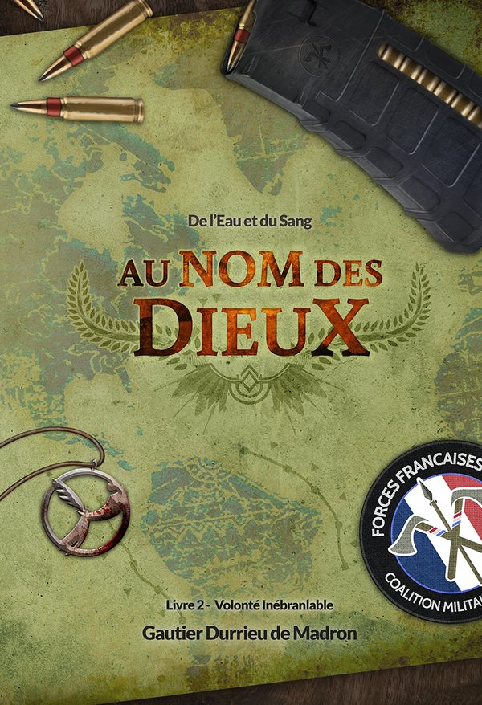
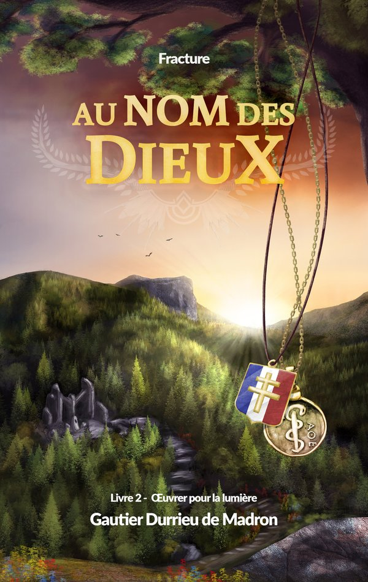
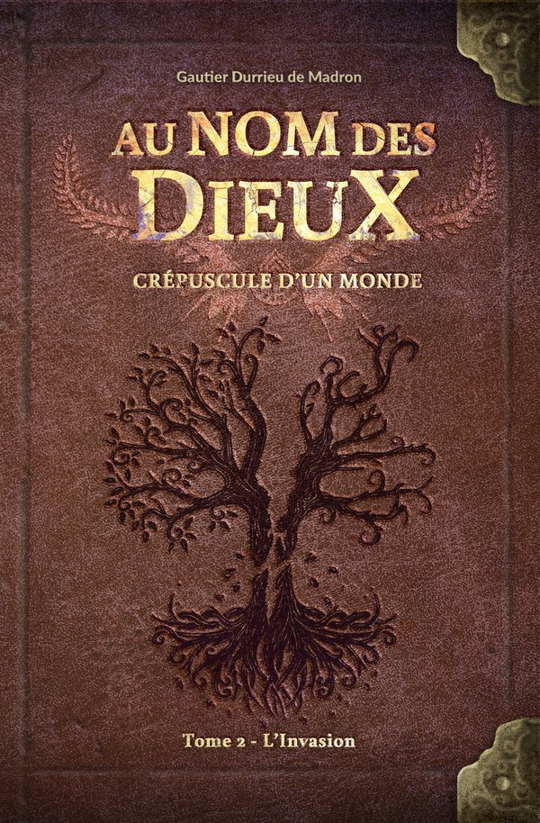
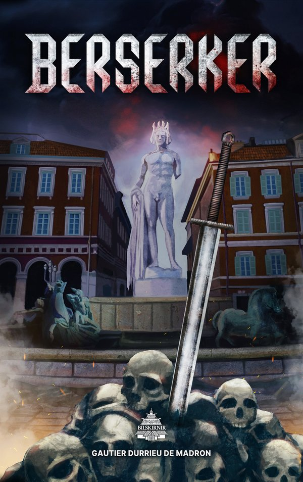
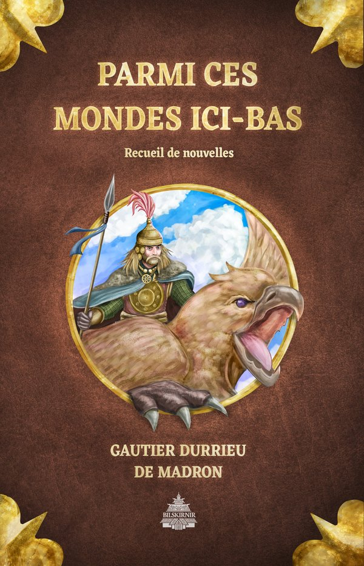

Les romans épiques à la française
Des héros, des mythes, et des histoires qui se dévorent comme les meilleures séries.
De l'Eau et du Sang
La guerre contre l'Empire d'Amérique, et une bande de demi-dieux qui n'avait rien demandé.
Entrer dans l'arc

Fracture
De la France occupée à Stalingrad. Trois demi-dieux pour empêcher qu'on réécrive la Seconde Guerre mondiale.
Entrer dans l'arc

Salvation
Un druide écossais visé, un ordre qui veut abolir les panthéons, deux agents de la Garde Varègue sur la piste.
Voir le livre
Crépuscule d'un monde
Quatre livres pour clore la saga. Les deux premiers sont parus.
Voir l'arc final

Berserker
Nice, après la pandémie. Un berserker veut mourir utile.
Voir le livre
Parmi ces mondes ici-bas
Sept nouvelles, sept mondes.
Voir le livre
Une maison d'édition de romans épiques, fondée par Gautier Durrieu de Madron : romancier, expert en mythologie, conférencier et vulgarisateur en ligne.
Prochain salon : [NOM DU SALON] · [DATE] · [VILLE] →